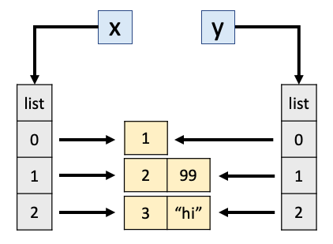
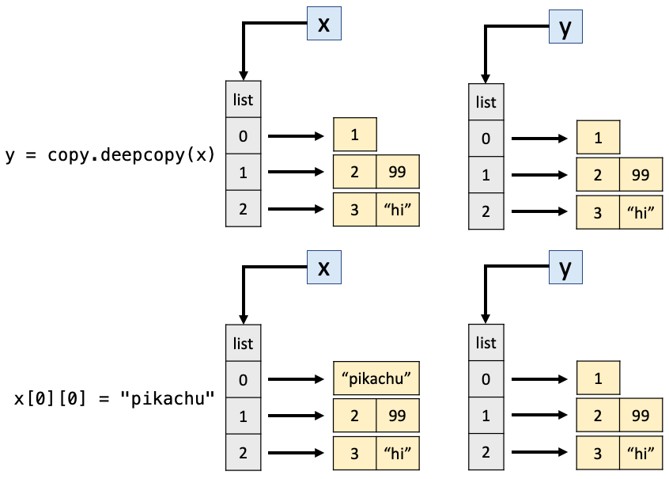

Chapter 4: Style Guides, Scripts, Imports¶
Chapter Outline
Chapter Learning Objectives¶
Describe why code style is important.
Differentiate between the role of a linter like
flake8and an autoformatter likeblack.Implement linting and formatting from the command line or within Jupyter or another IDE.
Write a Python module (
.pyfile) in VSCode or other IDE of your choice.Import installed or custom packages using the
importsyntax.Explain the notion of a reference in Python.
Explain the notion of scoping in Python.
Anticipate whether changing one variable will change another in Python.
Anticipate whether a function changes the caller’s version of an argument variable in Python.
Select the appropriate choice between
==andisin Python.
1. Style Guide¶

Source: xkcd.com.
{kind=link}
It is incorrect to think that if your code works then you are done. Code has two “users” - the computer (which turns it into machine instructions) and humans, who will likely read and/or modify the code in the future. This section is about how to make your code suitable to that second audience, humans.
Styling is particularly important for sharing your code to other users (including your future self!). Remember: “Code is read much more often than it is written”. PEP8 is the Python Style Guide. It is worth skimming through PEP 8, but here are some highlights:
Indent using 4 spaces
Have whitespace around operators, e.g.
x = 1notx=1But avoid extra whitespace, e.g.
f(1)notf (1)Single and double quotes both fine for strings, but use
"""triple double quotes"""for docstrings, not'''triple single quotes'''Variable and function names use
underscores_between_wordsAnd much more…
There’s lots to remember but luckily linters & formatters can help you adhere to uniform styling!
Linters¶
Linting refers to highlighting programmatic and stylistic problems in your Python source code. Think of it like “spell check” in word processing software. Common linters include pycodestyle, pylint, pyflakes, flake8, etc. We’ll use flake8 in this chapter, which, if you don’t have it, you can install with:
conda install -c anaconda flake8
flake8 can be used from the command line to check files:
flake8 path/file_to_check.py
You can execute shell commands in Jupyter by prepending a command with an exclamation mark !. I’ve included an example script called bad_style.py in the data sub-directory of this directory, let’s use flake8 on that now:
!flake8 data/bad_style.py
data/bad_style.py:1:6: E201 whitespace after '{'
data/bad_style.py:1:11: E231 missing whitespace after ':'
data/bad_style.py:1:14: E231 missing whitespace after ','
data/bad_style.py:1:18: E231 missing whitespace after ':'
data/bad_style.py:2:1: E128 continuation line under-indented for visual indent
data/bad_style.py:2:4: E231 missing whitespace after ':'
data/bad_style.py:4:25: E128 continuation line under-indented for visual indent
data/bad_style.py:5:5: E225 missing whitespace around operator
data/bad_style.py:7:80: E501 line too long (119 > 79 characters)
data/bad_style.py:8:2: E111 indentation is not a multiple of four
data/bad_style.py:10:2: E111 indentation is not a multiple of four
data/bad_style.py:11:2: E111 indentation is not a multiple of four
data/bad_style.py:12:2: E111 indentation is not a multiple of four
data/bad_style.py:13:10: E701 multiple statements on one line (colon)
data/bad_style.py:13:31: E261 at least two spaces before inline comment
data/bad_style.py:13:31: E262 inline comment should start with '# '
data/bad_style.py:14:1: E302 expected 2 blank lines, found 0
data/bad_style.py:14:13: E201 whitespace after '('
data/bad_style.py:14:25: E202 whitespace before ')'
data/bad_style.py:15:3: E111 indentation is not a multiple of four
data/bad_style.py:15:8: E211 whitespace before '('
data/bad_style.py:15:19: E202 whitespace before ')'
data/bad_style.py:16:11: E271 multiple spaces after keyword
data/bad_style.py:17:3: E301 expected 1 blank line, found 0
data/bad_style.py:17:3: E111 indentation is not a multiple of four
data/bad_style.py:17:16: E231 missing whitespace after ','
data/bad_style.py:18:7: E111 indentation is not a multiple of four
data/bad_style.py:20:1: E305 expected 2 blank lines after class or function definition, found 0
data/bad_style.py:28:2: W292 no newline at end of file
Formatters¶
Formatting refers to restructuring how code appears by applying specific rules for line spacing, indents, line length, etc. Common formatters include autopep8, black, yapf, etc. We’ll use black in this chapter, which, if you don’t have it, you can install with:
conda install -c conda-forge black
black can also be used from the command line to format your files:
black path/file_to_check.py --check
The --check argument just checks if your code conforms to black style but doesn’t reformat it in place, if you want your file reformatted, remove the argument.
!black data/bad_style.py --check
would reformat data/bad_style.py
Oh no! üí• üíî üí•
1 file would be reformatted.
Here’s the file content before formatting:
x = { 'a':37,'b':42,
'c':927}
very_long_variable_name = {'field': 1,
'is_debug': True}
this=True
if very_long_variable_name is not None and very_long_variable_name["field"] > 0 or very_long_variable_name['is_debug']:
z = 'hello '+'world'
else:
world = 'world'
a = 'hello {}'.format(world)
f = rf'hello {world}'
if (this): y = 'hello ''world'#FIXME: https://github.com/python/black/issues/26
class Foo ( object ):
def f (self ):
return 37*-2
def g(self, x,y=42):
return y
# fmt: off
custom_formatting = [
0, 1, 2,
3, 4, 5
]
# fmt: on
regular_formatting = [
0, 1, 2,
3, 4, 5
]
ANd here it is after formatting (note how you can toggle formatting on or off in your code using the # fmt: off/# fmt: on tags):
x = {"a": 37, "b": 42, "c": 927}
very_long_variable_name = {"field": 1, "is_debug": True}
this = True
if (
very_long_variable_name is not None
and very_long_variable_name["field"] > 0
or very_long_variable_name["is_debug"]
):
z = "hello " + "world"
else:
world = "world"
a = "hello {}".format(world)
f = rf"hello {world}"
if this:
y = "hello " "world" # FIXME: https://github.com/python/black/issues/26
class Foo(object):
def f(self):
return 37 * -2
def g(self, x, y=42):
return y
# fmt: off
custom_formatting = [
0, 1, 2,
3, 4, 5
]
# fmt: on
regular_formatting = [0, 1, 2, 3, 4, 5]
Comments¶
Comments are important for understanding your code. While docstrings cover what a function does, your comments will help document how your code achieves its goal. There are PEP 8 guidelines on the length, spacing, etc of comments.
Comments: should start with a
#followed by a single space and be preceded by at least two spaces.Block Comments: each line of a block comment should start with a
#followed by a single space and should be indented to the same level as the code it precedes.Generally, comments should not be unnecessarily verbose or just state the obvious, as this can be distracting and can actually make your code more difficult to read!
Here is an example of a reasonable comment:
def random_walker(T):
x = 0
y = 0
for i in range(T):
# Generate a random number between 0 and 1.
# Then, go right, left, up or down if the number
# is in the interval [0,0.25), [0.25,0.5),
# [0.5,0.75) or [0.75,1) respectively.
r = random()
if r < 0.25:
x += 1 # Go right
elif r < 0.5:
x -= 1 # Go left
elif r < 0.75:
y += 1 # Go up
else:
y -= 1 # Go down
print((x,y))
return x**2 + y**2
Here are some bad examples of comments, because they are unnecessary or poorly formatted:
def random_walker(T):
# intalize coords
x = 0
y = 0
for i in range(T):# loop T times
r = random()
if r < 0.25:
x += 1 # go right
elif r < 0.5:
x -= 1 # go left
elif r < 0.75:
y += 1 # go up
else:
y -= 1
# Print the location
print((x, y))
# In Python, the ** operator means exponentiation.
return x ** 2 + y ** 2
2. Python Scripts¶
Jupyter is a fantastic data science tool which allows you to code and create visualisations alongside text and images to create narratives. However, as your project grows, eventually you’re going to need to create python scripts, .py files .py files are also called “modules” in Python and may contain functions, classes, variables, and/or runnable code. I typically start my projects in Jupyter, and then begin to offload my functions, classes, scripts, etc to .py files as I formalise, structure and streamline my code.
IDEs¶
You don’t need any special software to write Python modules, you can write your code using any text editor and just save your file with a .py extension. But software exists to make your life much easier!
IDE stands for “integrated development environment” and refers to software that provides comprehensive functionality for code development (e.g., compiling, debugging, formatting, testing, linting, etc). In my experience the most popular out-of-the-box Python IDEs are PyCharm and Spyder. There are also many editors available that can be customized with extensions to act as Python IDEs, e.g., VSCode, Atom, Sublime Text. The benefit of these customisable editors is that they are light-weight and you can choose only the extensions you really need (as opposed to downloading a big, full-blown IDE like PyCharm).
VSCode is my favourite editor at the moment and they have a great Python tutorial online which I’d highly recommend if you’re interested! We’ll do some importing of custom .py files in these chapters but won’t do any work in an IDE.
3. Importing¶
Python can access code in another module by importing it. This is done using the import statement, which you’ve probably seen a few times already. We’ll discuss importing more in DSCI 524 and you can read all about it in the Python documentation but for now, it’s easiest to see it in action.
Ways of Importing Things¶
I’ve written a .py file called wallet.py that contains a class Wallet that can be used to store, spend, and earn cash. I recommend taking a look at that file on GitHub before moving on.
Let’s import the code from wallet.py . We can import our .py file (our module) simply by:
import wallet
We can take a look at all the useable parts of that module by typing dir(wallet):
dir(wallet)
['InsufficientCashError',
'Wallet',
'__builtins__',
'__cached__',
'__doc__',
'__file__',
'__loader__',
'__name__',
'__package__',
'__spec__']
We can import a package using an alias with the as keyword:
import wallet as w
w.Wallet(100)
<wallet.Wallet at 0x1068846d0>
w.InsufficientCashError()
wallet.InsufficientCashError()
And we can import just a specific function/class/variable from our module:
from wallet import Wallet
Wallet(100) # now I can refer to it without the module name prefix
<wallet.Wallet at 0x106884df0>
You can even mix up all these methods:
from wallet import Wallet as w
w(100)
<wallet.Wallet at 0x1068844c0>
It’s also possible to import everything in a module, though this is generally not recommended:
from wallet import *
Wallet(100)
<wallet.Wallet at 0x1068845e0>
InsufficientCashError()
wallet.InsufficientCashError()
Importing Functions from Outside your Working Directory¶
I could do import wallet above because wallet.py is in my current working directory. But there are a few extra steps needed if it is in a different location. I’ve included a script called hello.py in a data/ sub-directory of the directory housing this notebook. All it has in it is:
PLANET = "Earth"
def hello_world():
print(f"Hello {PLANET}!")
Unfortunately I can’t do this:
from hello import hello_world
---------------------------------------------------------------------------
ModuleNotFoundError Traceback (most recent call last)
<ipython-input-19-20bbd0c111a6> in <module>
----> 1 from hello import hello_world
ModuleNotFoundError: No module named 'hello'
What I need to do is add this directory location to the paths that Python searches through when looking to import something. I usually do this using the sys module:
import sys
sys.path.append('data/')
sys.path # display the current paths Python is looking through
['/Users/tbeuzen/GitHub/online-courses/python-programming-for-data-science/chapters',
'/opt/miniconda3/envs/py4ds/lib/python38.zip',
'/opt/miniconda3/envs/py4ds/lib/python3.8',
'/opt/miniconda3/envs/py4ds/lib/python3.8/lib-dynload',
'',
'/opt/miniconda3/envs/py4ds/lib/python3.8/site-packages',
'/opt/miniconda3/envs/py4ds/lib/python3.8/site-packages/IPython/extensions',
'/Users/tbeuzen/.ipython',
'data/']
See that data/ is now a valid path. So now I can import from hello.py:
from hello import hello_world, PLANET
PLANET # note that I can import variable defined in a .py file!
'Earth'
hello_world()
Hello Earth!
Packages¶
As your code gets more complex, grows in modules, and you wish to share it, you’ll want to turn it into a Python package. Packages are logical collections of modules that can be easily imported. If you’re interested in creating your own packages, take a look at the py-pkgs book. For now, we’ll be using other people’s popular data science packages, specifically, next chapter we’ll look at numpy: “the fundamental package for scientific computing with Python”.
Importing Installed Packages¶
In the next few chapters we’ll be using the numpy and pandas packages, which are probably the most popular for data science. When you install those packages, they are put in a location on your computer that Python already knows about, so we can simply import them at will.
import numpy as np
np.array([1, 2, 3])
array([1, 2, 3])
np.random.randint(0, 10, 3)
array([3, 9, 7])
There are plenty of packages that come with the Python Standard Library - these do not require installation with conda and you’ll come across them throughout your data science journey, I’ll show one example, random, below. But for more advanced stuff you’ll to install and use packages like numpy, pandas and others. If you need some specific functionality, make sure you check if there’s a package for it (there often is!). For example, one functionality I often want is a progress bar when looping over a for loop. This is available in the tqdm package:
from tqdm import tqdm
for i in tqdm(range(int(10e5))):
i ** 2
0%| | 0/1000000 [00:00<?, ?it/s]
21%|██ | 207211/1000000 [00:00<00:00, 2072107.04it/s]
42%|████▏ | 420255/1000000 [00:00<00:00, 2089264.93it/s]
66%|██████▌ | 657347/1000000 [00:00<00:00, 2166474.45it/s]
90%|████████▉ | 895911/1000000 [00:00<00:00, 2227869.20it/s]
100%|██████████| 1000000/1000000 [00:00<00:00, 2274442.52it/s]
4. Intriguing Behaviour in Python¶
References¶
What do you think the code below will print?
x = 1
y = x
x = 2
y
1
And how about the next one?
x = [1]
y = x
x[0] = 2
y
[2]
In Python, the list x is a reference to an object in the computer’s memory. When you set y = x these two variables now refer to the same object in memory - the one that x referred to. Setting x[0] = 2 modifies the object in memory. So x and y are both modified (it makes no different if you set x[0] = 2 or y[0] = 2, both modify the same memory).
Here’s an analogy that might help understand what’s going on:
I share a Dropbox folder (or git repo) with you, and you modify it – I sent you the location of the stuff (this is like the list case)
I send you an email with a file attached, you download it and modify the file – I sent you the stuff itself (this is like the integer case)
Okay, what do you think will happen here:
x = [1]
y = x
x = [2] # before we had x[0] = 2
y
[1]
Here we are not modifying the contents of x, we are setting x to refer to a new list [2].
Additional Weirdness¶
We can use id() to return the unique id of an object in memory.
x = np.array([1, 2, 3, 4, 5]) # this is a numpy array which we'll learn more about next chapter
y = x
x = x + 5
print(f"x has the value: {x}, id: {id(x)}")
print(f"y has the value: {y}, id: {id(y)}")
x has the value: [ 6 7 8 9 10], id: 5042109936
y has the value: [1 2 3 4 5], id: 5713686976
x = np.array([1, 2, 3, 4, 5])
y = x
x += 5
print(f"x has the value: {x}, id: {id(x)}")
print(f"y has the value: {y}, id: {id(y)}")
x has the value: [ 6 7 8 9 10], id: 5042109696
y has the value: [ 6 7 8 9 10], id: 5042109696
So, it turns out x += 5 is not identical x = x + 5. The former modifies the contents of x. The latter first evaluates x + 5 to a new array of the same size, and then overwrites the name x with a reference to this new array.
But there’s good news - we don’t need to memorize special rules for calling functions. Copying happens with int, float, bool, (maybe some other ones I’m forgetting?), the rest is “by reference”. Now you see why we care if objects are mutable or immutable… passing around a reference can be dangerous! General rule - if you do x = ... then you’re not modifying the original, but if you do x.SOMETHING = y or x[SOMETHING] = y or x *= y then you probably are.
copy and deepcopy¶
We can force the certain copying behaviour using the copy library if we want to:
import copy # part of the standard library
x = [1]
y = x
x[0] = 2
y
[2]
x = [1]
y = copy.copy(x) # We "copied" x and saved that new object as y
x[0] = 2
y
[1]
Ok, so what do you think will happen here?
x = [[1], [2, 99], [3, "hi"]] # a list of lists
y = copy.copy(x)
print("After copy.copy():")
print(x)
print(y)
x[0][0] = "pikachu"
print("")
print("After modifying x:")
print(x)
print(y)
After copy.copy():
[[1], [2, 99], [3, 'hi']]
[[1], [2, 99], [3, 'hi']]
After modifying x:
[['pikachu'], [2, 99], [3, 'hi']]
[['pikachu'], [2, 99], [3, 'hi']]
But wait.. we used copy, why are x and y both changed in the latter example? copy makes the containers different, i.e., only the outer list. But the outer lists contain references to objects which were not copied! This is what happens after y = copy.copy(x):

We can use is to tell apart these scenarios (as opposed to ==). is tells us if two objects are referring to the same object in memory, while == tells us if their contents are the same:
x == y # they are both lists containing the same lists
True
x is y # but they are not the *same* lists of lists
False
So, by that logic we should be able to append to y without affecting x:
y.append(5)
print(x)
print(y)
[['pikachu'], [2, 99], [3, 'hi']]
[['pikachu'], [2, 99], [3, 'hi'], 5]
x == y
False
That makes sense, as weird as it seems:

In short, copy only copies one level down. What if we want to copy everything? i.e., even the inner lists in our outer list… Enter our friend deepcopy:
x = [[1], [2, 99], [3, "hi"]]
y = copy.deepcopy(x)
x[0][0] = "pikachu"
print(x)
print(y)
[['pikachu'], [2, 99], [3, 'hi']]
[[1], [2, 99], [3, 'hi']]

Tip
If you’re interested, you can find a whole compilation of more intriguing behaviour in Python here!